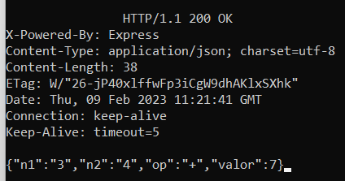
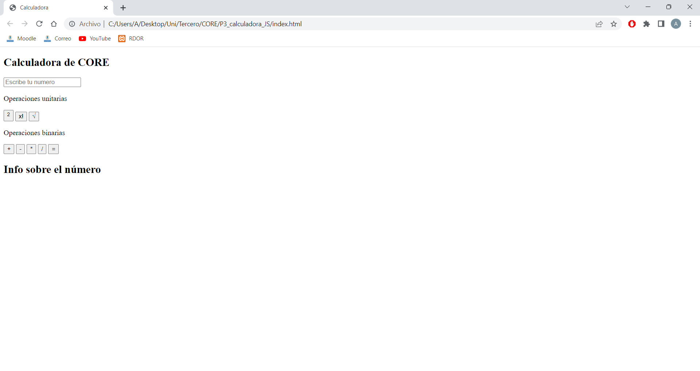
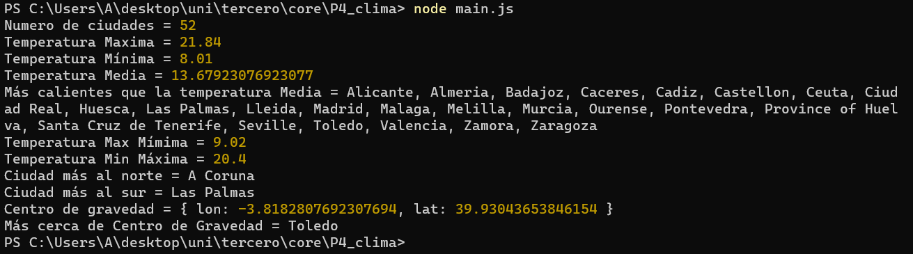
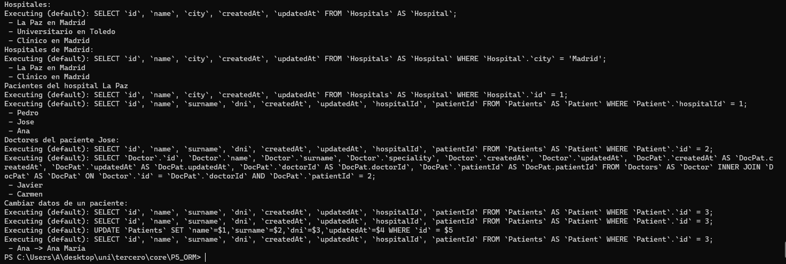
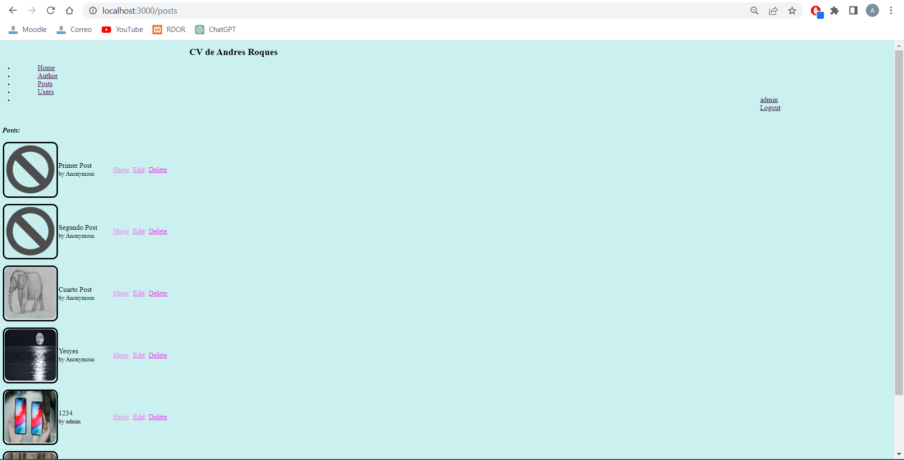

CORE · 2022–2023 · 10 prácticas
De HTTP manual a una aplicación web con usuarios, autores y roles
Recorrido completo de la asignatura: peticiones HTTP, HTML/CSS, JavaScript, Node.js, ORM y una aplicación Express que evoluciona hasta incorporar persistencia, autenticación, autoría y autorización.
Se han revisado individualmente las diez prácticas. P1–P6 son hitos distintos; P7–P10 forman una evolución incremental del mismo blog. Los enunciados, autocorrectores, dependencias y material docente quedan fuera. La práctica de CV y las páginas de autor no se redistribuyen porque contienen datos personales históricos.
Progresión completa
Diez entregas, una curva de aprendizaje clara.
Calculadora HTTP
Peticiones POST construidas manualmente, cabeceras, cuerpo application/x-www-form-urlencoded, respuesta JSON, error 400 y petición incompleta para provocar timeout.
CV en HTML y CSS
Primera página estática con estructura semántica, imágenes, enlaces y estilos CSS. Se documenta como práctica, pero el código original no se publica por contener datos personales.
Calculadora JavaScript
Interfaz HTML con DOM, eventos y operaciones unitarias/binarias para practicar variables, condicionales, bucles, arrays y funciones en cliente.
Clima con Node.js
Módulo Node.js que lee datos meteorológicos de forma asíncrona y procesa arrays/objetos con map, filter, reduce y otras operaciones.
ORM con Sequelize
Aplicación de consola sobre SQLite con modelos Doctor, Hospital y Patient, relaciones 1:N y N:M, y operaciones CRUD/consulta implementadas mediante Sequelize.
Express + MVC + EJS
Servidor generado con Express y adaptado a una arquitectura MVC con rutas, vistas EJS, layout común y página de autor. La parte con información personal se excluye de la publicación.
Blog REST
Conversión del servidor anterior en un blog: CRUD de posts, adjuntos, SQLite/Sequelize, migraciones, seeders, controladores y vistas específicas.
Autenticación
Gestión CRUD de usuarios, email validado, contraseñas cifradas, login/logout y sesiones web integradas en la aplicación.
Autores
Relación 1:N entre User y Post mediante authorId, asignación de autor al crear publicaciones y carga de la autoría en las vistas.
Roles y permisos
Autorización en servidor mediante middlewares: publicar exige login, editar/borrar depende de autoría o rol admin y la gestión de usuarios queda restringida.
Resultado final
El blog acumula las prácticas 7–10.
Evidencias
Hitos de la evolución.





Autorización final
La política se aplica en las rutas y controladores.
Visitante
Puede consultar publicaciones, pero no crear ni modificar contenido.
Usuario autenticado
Puede publicar y operar sobre los recursos que le pertenecen.
Administrador
Puede gestionar publicaciones y usuarios con privilegios ampliados.
Middlewares
Las comprobaciones de login, administrador, autor o propietario se realizan en servidor antes de ejecutar la operación.
Stack
Tecnologías practicadas
Entregables seleccionados